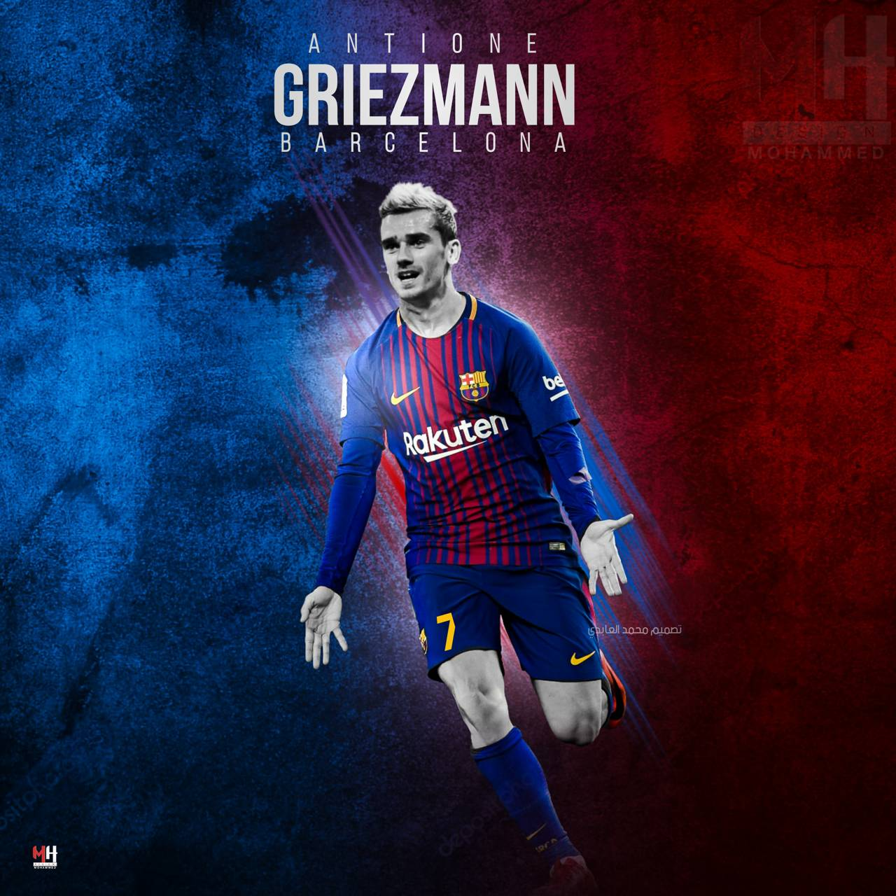

<section id="AC">

    <div class="layout ">
        <div class="about-header">

            <h1 class="text-white text-center ">About Player</h1>
            <div class="hr"></div>
            <div class="hr1"></div>
            <div class="hr2"></div>
        </div>


        <div class="container">
            <div class="row">
                <div class="col-md-4">
                    
                    <h3>Antoine Griezmann : </h3>
                    <p>Antoine Griezmann (French pronunciation: ​[ born 21 March 1991) is a French professional
                        footballer who
                        plays as a forward for La Liga club Barcelona and the France national team.
                        Griezmann began his senior club career playing for Real Sociedad, and won the Segunda División
                        title in
                        his first season. In 2014, Griezmann moved to Atlético Madrid for a then-club record €30
                        million, where he
                        won the UEFA Europa League, the UEFA Super Cup. </p>
                </div>

                <div class="col-md-4">
                    
                    <h3>Memphis Depay:</h3>
                    <p>Memphis began his professional career with PSV Eindhoven, where, under the influence of manager
                        Phillip
                        Cocu, he became an integral part of the team, scoring 50 goals in 124 games across all
                        competitions.
                        During the 2014–15 season, he was the Eredivisie's top scorer with 22 goals in 30 games, and
                        helped the
                        team win the Eredivisie title for the first time since 2008.
                    <p>
                </div>
                <div class="col-md-4">
                    
                    <h3>Marc-André ter Stegen:</h3>
                    <p>Marc-André ter Stegen German pronunciation: born 30 April 1992) is a German professional
                        footballer who
                        plays as a goalkeeper for La Liga club Barcelona and the Germany national team.[5][6][7] Known
                        for his
                        reflexes, passing, and ball-playing ability, he is considered one of the best goalkeepers in the
                        world
                    <p>
                </div>


            </div>
        </div>
    </div>
</section>